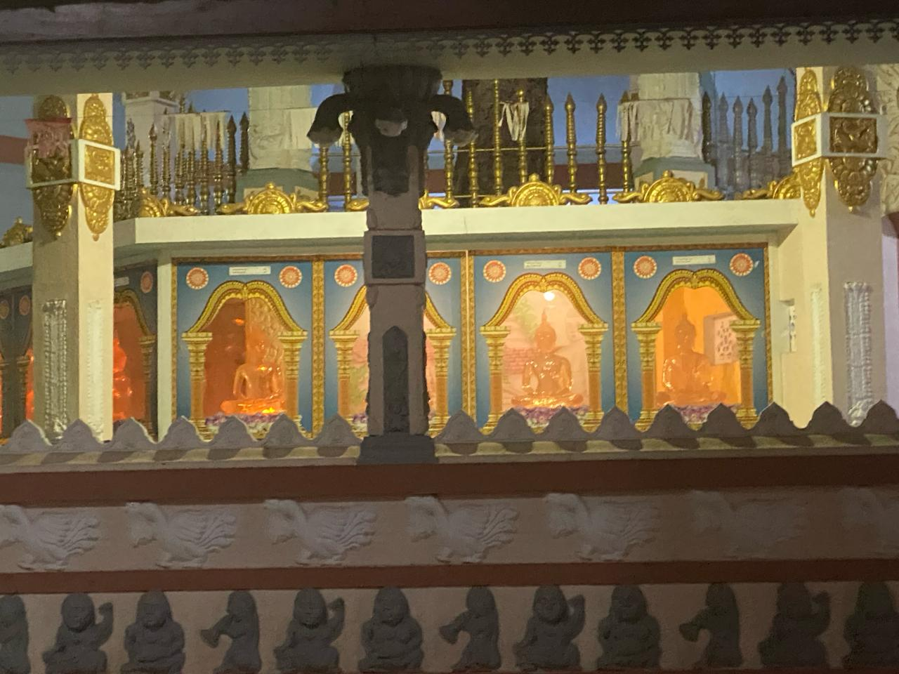
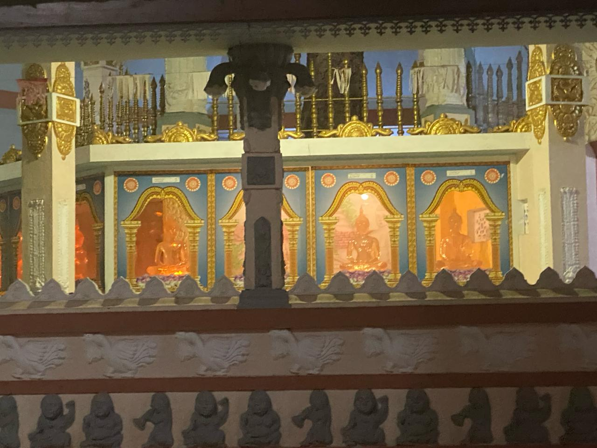

ශ්රී පුෂ්පාරාම විහාරස්ථානයේ වසර 200 කට අධික කාලයක සිට පැවත ගෙන එන විහාරස්ථානයකි. විහාරස්ථානයේ නිශ්චිත තොරතුරක් ලබා ගැනීමට සාධක හමුවී නොමැත. කෙසේ නමුත් විහාරස්ථානයේ බුද්ධ මන්දිරයේ ඇති බුද්ධ ප්රතිමාව නුවර යුගයට අයත් බවට සාධක දැක ගත හැකිය.
- විහාරස්ථානයේ රෝපණය කර ඇති බෝධීන් වහන්සේ ශ්රී මහා බෝධීන් වහන්සේගේ අංකුරයක් වන අතර එය ක්රි.ව.1976 වර්ෂයේදී රෝපණය කර ඇත.
- විහාරස්ථානයේ චෛත්ය රාජයාණන් වහන්සේ ආරම්භ කරන ලද්දේ ක්රි.ව.1968 සාධක දැක ගත හැකිය.
- විහාරස්ථානයේ පොහොය සීමාව ක්රි.ව. 1968 ආරම්භ කර ඇති බව ජනප්රවාද තුලින් සාධක හමුවී ඇත.
- විහාරස්ථානයේ ධර්ම ශාලාව පිටත දොරටු සතරකින් හා ඇතුලත දොරටු සතරකින් යුක්තව නිර්මාණය කර ඇත.
ශ්රී පුෂ්පාරාම විහාරස්ථානයේ වැඩ විසූ අපවත් වී වදාළ පාරම්පරික දේශීය වෛද්ය පූජ්ය මහාඇලගමුවේ ලංකානන්ද නායක හිමිපාණන් වහන්සේගේ සම්ප්රාප්තිය 1976 සිදු වූ අතර දේශීය වෛද්ය ක්රමය සිදු කරමින් විහාරස්ථානය නව මාවතකට යොමු කළහ.
- පුජ්ය මහඇලගමුවේ ලංකානන්ද හිමියෝ තම බලය දනය යොදවමින් විහාරස්ථානයේ ගල් ලෙන් විහාරයද නිර්මාණය කර ඇත
- බෝධි රාජයාණන් වහන්සේ වටා බෝධි ගෘහයක් ද නිර්මාණය කර ඇත.
- චෛත්ය රාජයාණන් වහන්සේ වටා චෛත්ය ගෘහයක්ද නිර්මාණය කර ඇත.
- ධර්ම ශාලාව ප්රතිසංස්කරණය කොට අලංකාරමත් කර ඇත.
- ආවාස පහසුකම් ඇතිව නිර්මාණය කර ඇත.
- දාන ශාලා ගොඩනැගිල්ලක්ද නිර්මාණය කර ඇත.
- විහාරස්ථානය පිටුපස අක්කරයක පමණ භුමි ප්රමාණයක් මිලදී ගෙන විහාරස්ථානයට සම්බන්ධ කර ඇත.
- විහාරස්ථානය නව මාවතකට පත් කිරීමට කටයුතු කර ඇත.
- දෙස් විදෙස් ලෝක වාසින් උදෙසා වෛද්ය ප්රතිකර්මද සිදු කර ලක්ෂ සoඛයාත රෝගීන් සුවපත් කර ඇත.
- දායක කාරකාදීන්ගේ කටයුතු සිදු කළහ.
2022.08.26 වන දින වෛද්ය පූජ්ය මහාඇලගමුවේ ලංකානන්ද නායක හිමිපාණන් වහන්සේගේ අපවත් වී වදාළහ.

 
